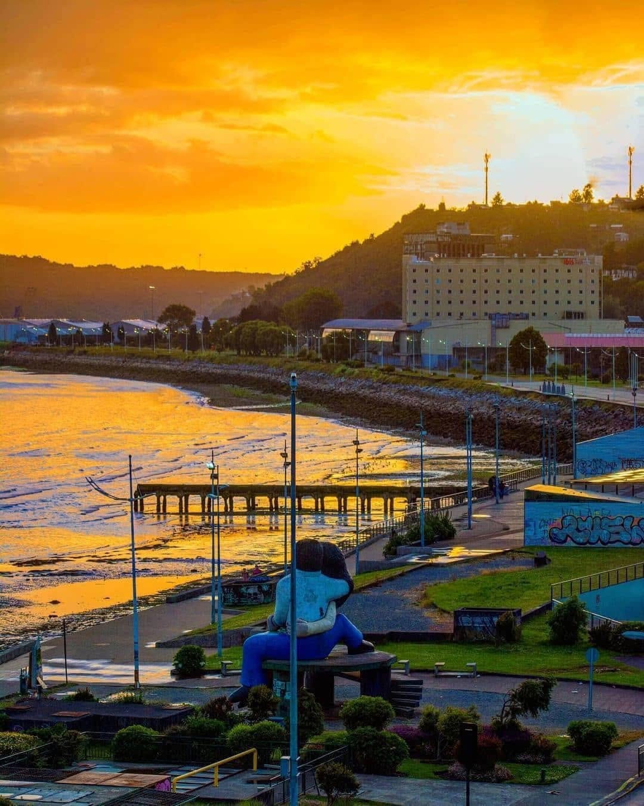

Descubre la magia de Puerto Aurora
La historia de Puerto Aurora comienza en 1878, cuando un pequeño grupo de pescadores se instaló alrededor de una bahía natural que ofrecía protección contra las grandes tormentas del océano. Según la tradición local, el nombre de la ciudad surgió una mañana en la que los primeros habitantes observaron cómo el amanecer iluminaba completamente la bahía. El cielo tomó tonos anaranjados y rosados que se reflejaban sobre el agua, y desde entonces comenzaron a llamar al lugar "la bahía de la aurora". Durante sus primeras décadas, la población creció gracias a la pesca y el comercio marítimo. A comienzos del siglo XX llegó el ferrocarril, permitiendo conectar Puerto Aurora con otras ciudades y transformando al pequeño pueblo pesquero en un importante centro comercial. La antigua estación ferroviaria se convirtió rápidamente en uno de los puntos más importantes de la ciudad. Con el paso de los años, cuando el transporte ferroviario perdió protagonismo, el edificio fue abandonado. Décadas después, la estación fue restaurada y convertida en un espacio cultural, dando origen al actual Centro Cultural La Estación. Durante la segunda mitad del siglo XX, Puerto Aurora comenzó a desarrollar una nueva actividad: el turismo. La construcción del paseo costero, la restauración del antiguo faro y la creación de nuevos espacios culturales hicieron que la ciudad dejara de depender exclusivamente de la actividad portuaria. Actualmente, Puerto Aurora busca mantener un equilibrio entre su pasado y su presente. Sus habitantes conservan un fuerte sentimiento de pertenencia hacia la historia marítima de la ciudad, mientras que el arte, la música y las actividades al aire libre forman parte de su identidad moderna.

Actividades y eventos destacados- Faro de Aurora
- Puerto Histórico
- Centro Cultural La Estación
- Parque del Sol
En el apartado "Ciudad", puedes conocer más sobre los lugares y actividades que hacen de Puerto Aurora un destino único.